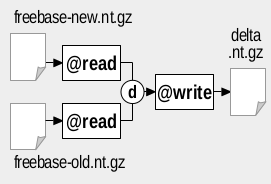

RDFpro usage examples (SAC paper)
We exemplify here the usage of RDFpro in three scenarios:
- Dataset Analysis scenario, where we extract statistics from a dataset and compare it with another one;
- Dataset Filtering scenario, where we extract a subset of a dataset;
- Dataset Merging scenario, where we combine data from multiple sources, performing smushing, RDFS inference and deduplication.
These scenarios are taken from the SAC 2015 paper and further extended to show the concrete RDFpro commands necessary to carry out the required processing steps. Note, however, that the numbers here reported (collected after repeating the processing in January 2015) are different from the ones in the paper, as both the accessed data sources and RDFpro have changed in the meanwhile (more data available, faster RDFpro implementation).
Scenario 1. Dataset Analysis
Dataset analysis comprises all the tasks aimed at providing a qualitative and quantitative characterization of the contents of an RDF dataset, such as the extraction of the data TBox or of instance-level ABox data statistics (e.g., VOID). When processing RDF, dataset analysis can be applied both to input and output data. In the first case, it helps identifying relevant data and required pre-processing tasks, especially when the dataset scope is broad (as occurs with many LOD datasets) or its documentation is poor. In the second case, it provides a characterization of output data that is useful for validation and documentation purposes.
We describe here how RDFpro can be used for large-scale dataset analysis. We consider the tasks of extracting TBox and VOID statistics from Freebase data, whose schema and statistics are not available online, and the task of comparing the latest Freebase release with a previous release in order to identify newly added triples (we omit the further analysis of this delta, as it can use the same TBox and statistics extraction techniques applied here to the whole Freebase).
Processing
We assume the latest version of Freebase is available as file freebase_new.nt.gz, while a previous version is available as file freebase_old.nt.gz. The figures below show how to use RDFpro to extract TBox and VOID statistics (left figure) and to identify newly added triples (right figure) in the considered scenario:
 |
 |
We use the @tbox and @stats processors to extract TBox and VOID statistics. The two processors can be used separately by invoking RDFpro twice as follows (note the use of the -t 100 option: it require to emit statistics of classes and properties with at least 100 instances, which is necessary in order to load the generated statistics in tools such as Protégé - see below):
rdfpro @read freebase_new.nt.gz @tbox @write tbox.tql.gz rdfpro @read freebase_new.nt.gz @stats -t 100 @write stats.tql.gz
The two processors can also be composed in a single pipeline where Freebase data is read once and fed to both processors in parallel, as in the figure above. The corresponding RDFpro command is:
rdfpro @read freebase_new.nt.gz { @tbox @write tbox.tql.gz , @stats -t 100 @write stats.tql.gz }
Extraction of newly added triples can be done exploiting the parallel composition with the difference set operator (flag d) to combine quads, using the command:
rdfpro { @read freebase_new.nt.gz , @read freebase_old.nt.gz }d @write new-triples.tql.gz
Results
The table below reports the tasks execution times, throughputs, input and output sizes (quads and gzipped bytes) we measured on our test machine, an Intel Core I7 860 workstation with 16 GB RAM and a 500GB 7200RPM hard disk, using pigz and pbzip2 as compressors/decompressors and sort -S 4096M --batch-size=128 --compress-program=pigz as the sort command; our ‘latest’ Freebase release (2789 Mquads) was obtained on 2015/01/18, while our old release (2623 Mquads) was downloaded on 2014/07/10. In addition to the table below, when running the comparison task we measured a disk usage of 92.8 GB for storing the temporary files produced by the sorting-based difference set operator (∼18 bytes per input triple).
| Task | Input size | Output size | Throughput | Time [s] |
|||
|---|---|---|---|---|---|---|---|
| [Mquads] | [MiB] | [Mquads] | [MiB] | [Mquads/s] | [MiB/s] | ||
| 1. TBox extraction | 2789 | 28460 | 0.23 | 2.63 | 2.11 | 21.54 | 1321 |
| 2. Statistics extraction | 2789 | 28460 | 0.13 | 1.33 | 0.36 | 3.64 | 7819 |
| 1-2 Aggregated | 2789 | 28460 | 0.37 | 3.96 | 0.36 | 3.66 | 7784 |
| 3. Comparison | 5412 | 55214 | 339 | 2921 | 0.38 | 3.89 | 14207 |
Comparing the two Freebase releases results the most expensive task due to sorting and involved input size. When performed jointly, TBox and statistics extraction present performance figures close to statistics extraction alone, as data parsing is performed once and the cost of TBox extraction (excluded parsing) is negligible. This is an example of how the aggregation of multiple processing tasks in a single RDFpro computation can generally lead to better performances due to a reduction of I/O overhead.
To provide an idea of the how analysis results can be used to explore the dataset, the figure below shows the joint browsing of extracted TBox and statistics in Protégé, exploiting the specific concept annotations emitted by @stats. The class and property hierarchies are augmented with the number of entities and property triples (marked as 1 in the figure), as well as with the detected property usage (2), e.g., O for object property, I for inverse functional; each concept is annotated with an example instance and a VOID partition individual (3), which provides numeric statistics about the concept (4).
Scenario 2. Dataset Filtering
When dealing with large RDF datasets, dataset filtering (or slicing) may be required to extract a small subset of interesting data, identified, e.g., based on a previous dataset analysis. Dataset filtering typically consists in (i) identifying the entities of interest in the dataset, based on selection conditions on their URIs, rdf:type or other properties; and (ii) extracting all the quads about these entities expressing selected RDF properties. These two operations can be implemented using multiple streaming passes in RDFpro.
We consider here a concrete scenario where the dataset is Freebase, the entities of interest are musical group (i.e., their rdf:type is fb:music.musical group) that are still active (i.e., there is no associated property fb:music.artist.active_end), and the properties to extract are the group name, genre and place of origin (respectively, rdfs:label, fb:music.artist.genre and fb:music.artist.origin).
Processing
We assume that the Freebase dump is available as file freebase_new.nt.gz. We implement the filtering task with two invocations of RDFpro as shown in the figure below.
The first invocation (marked as 1 in the figure) generates an RDF file listing as subjects the URIs of the entities of interest. This is done with two parallel @groovy processors, extracting respectively musical groups and no more active musical entities, whose outputs are combined with the difference merge criterion using the following RDFpro command:
rdfpro @read freebase.nt.gz \
{ @groovy -p 'emitIf(t == fb:music.musical_group)' , \
@groovy -p 'if(p == fb:music.artist.active_end) emit(s, rdf:type, fb:music.musical_group, null)' }d \
@write entities.tql.gz
The second invocation (marked as 2 in the figure) uses another @groovy processor to extract the desired quads, testing predicates and requiring subjects to be contained in the previously extracted file (whose URIs are indexed in memory by a specific function in the @groovy expression). The corresponding RDFpro command is:
rdfpro @read freebase.nt.gz \
@groovy 'def init(args) { instances = loadSet("./instances.tql", "s"); };
emitIf((p == rdfs:label || p == fb:music.artist.genre || p == fb:music.artist.origin)
&& instances.match(s) );' \
@write output.tql.gz
Results
The table below reports the execution times, throughputs, input and output sizes of the two invocations of RDFpro on our test machine (see previous scenario for the specs), when applied to the Freebase dump (2789 Mquads) downloaded on 2015/01/18.
| Task | Input size | Output size | Throughput | Time [s] |
|||
|---|---|---|---|---|---|---|---|
| [Mquads] | [MiB] | [Mquads] | [MiB] | [Mquads/s] | [MiB/s] | ||
| 1. Select entities | 2789 | 28460 | 0.21 | 0.83 | 1.90 | 19.40 | 1467 |
| 2. Extract quads | 2789 | 28461 | 0.41 | 5.06 | 1.04 | 10.58 | 2689 |
Although simple, the example shows how practical, large-scale filtering tasks are feasible with RDFpro. Streaming allows processing large amounts of data, while sorting enables the use of the intersection, union and difference set operators to implement, respectively, the conjunction, disjunction and negation of entity selection conditions.
More complex scenarios may be addressed with additional invocations that progressively augment the result (e.g., a third invocation can identify albums of selected artists, while a fourth invocation can extract the quads describing them). In cases where RDFpro model is insufficient or impractical (e.g., due to the need for recursive extraction of related entities, aggregation or join conditions), RDFpro can still be used to perform a first coarse-grained filtering that reduces the number of quads and eases their downstream processing.
Scenario 3. Dataset Merging
A common usage scenario is dataset merging, where multiple RDF datasets are integrated and prepared for application consumption. Data preparation typically comprises smushing, inference materialization and data deduplication (possibly with provenance tracking). These tasks make the use of the resulting dataset more easy and efficient, as reasoning and entity aliasing have been already accounted for.
We consider here a concrete dataset merging scenario with data from the following sources, for a total of ~3394 MQ (this scenario is similar to the one considered in the SemDev paper and described here, although here we consider much more data and leave out statistics extraction):
-
the Freebase complete dataset dataset, containing ~2789 MQ as of 18 January 2015
-
the GeoNames data file, ontology and schema mappings w.r.t. DBpedia, for a total of ~125 MQ
-
the following DBpedia 3.9 files for the four EN, ES, IT, NL DBpedia chapters, for a total of 406 MQ:
- DBpedia ontology
- article categories, EN, ES, IT, NL
- category labels, EN, ES, IT, NL
- external links, EN, ES, IT, NL
- geographic coordinates, EN, ES, IT, NL
- homepages, EN, ES, IT
- image links, EN, ES, IT
- instance types, EN, EN (heuristics), ES, IT, NL
- labels, EN, ES, IT, NL
- mapping-based properties, EN (cleaned), ES, IT, NL
- mapping-based properties (specific), EN, ES, IT, NL
- raw infobox properties, EN, ES, IT, NL
- raw infobox property definitions, EN, ES, IT, NL
- short abstracts, EN, ES, IT, NL
- long abstracts, EN, ES, IT, NL
- SKOS categories, EN, ES, IT, NL
- Wikipedia links, EN, ES, IT, NL
- interlanguage links, EN, ES, IT, NL
- DBpedia IRI - URI owl:sameAs links, EN, ES, IT, NL
- DBpedia - Freebase owl:sameAs links, EN, ES, IT, NL
- DBpedia - GeoNames owl:sameAs links, EN, ES, IT, NL
- person data, EN
- PND codes, EN
-
vocabulary definition files for FOAF, SKOS, DCTERMS, WGS84, GEORSS
In other words, we import all Freebase and GeoNames data as they only provide global dump files, while we import selected DBpedia dump files leaving out files for Wikipedia inter-page, redirect and disambiguation links and page and revision IDs/URIs. Bash script download.sh can be used to automatize the download of all the selected dump files, placing them in multiple directories vocab (for vocabularies), freebase, geonames, dbp_en (DBpedia EN), dbp_es (DBpedia ES), dbp_it (DBpedia IT) and dbp_nl (DBpedia NL).
Processing
The figure below shows the required processing steps (the most significant processor for each step is shown).

The five steps can be executed both individually (bash script process_single.sh) or by aggregating the first two and the last three (bash script process_aggregated.sh. The RDFpro commands for the single steps are reported below.
-
Transform. Data transformation serves (i) to track provenance, by placing quads in different named graphs based on the source dataset; and (ii) to adopt optimal serialization format (Turtle Quads) and compression scheme (gzip) that speed up further processing.
rdfpro { @read metadata.trig , \ @read vocab/* @transform '=c <graph:vocab>' , \ @read freebase/* @transform '-spo fb:type.object.name fb:type.object.type <http://rdf.freebase.com/key/*> <http://rdf.freebase.com/ns/user.*> <http://rdf.freebase.com/ns/base.*> =c <graph:freebase>' , \ @read geonames/*.rdf .geonames:geonames/all-geonames-rdf.zip \ @transform '-p gn:childrenFeatures gn:locationMap gn:nearbyFeatures gn:neighbouringFeatures gn:countryCode gn:parentFeature gn:wikipediaArticle rdfs:isDefinedBy rdf:type =c <graph:geonames>' , \ { @read dbp_en/* @transform '=c <graph:dbp_en>' , \ @read dbp_es/* @transform '=c <graph:dbp_es>' , \ @read dbp_it/* @transform '=c <graph:dbp_it>' , \ @read dbp_nl/* @transform '=c <graph:dbp_nl>' } \ @transform '-o bibo:* -p dc:rights dc:language foaf:primaryTopic' } \ @transform '+o <*> _:* * *^^xsd:* *@en *@es *@it *@nl' \ @transform '-o "" ""@en ""@es ""@it ""@nl' \ @write filtered.tql.gz -
TBox extraction. This step extracts the TBox needed for RDFS inference.
rdfpro @read filtered.tql.gz \ @tbox \ @transform '-o owl:Thing schema:Thing foaf:Document bibo:* con:* -p dc:subject foaf:page dct:relation bibo:* con:*' \ @write tbox.tql.gz -
Smushing. Smushing identifies owl:sameAs equivalence classes and assigns a canonical URI to each of them.
rdfpro @read filtered.tql.gz \ @smush '<http://dbpedia>' '<http://it.dbpedia>' '<http://es.dbpedia>' '<http://nl.dbpedia>' '<http://rdf.freebase.com>' '<http://sws.geonames.org>' \ @write smushed.tql.gz -
Inference. RDFS inference excludes rules rdfs4a, rdfs4b and rdfs8 to avoid materializing uninformative <X rdf:type rdfs:Resource> quads.
rdfpro @read smushed.tql.gz \ @rdfs -c '<graph:vocab>' -d tbox.tql.gz \ @write inferred.tql.gz -
Deduplication. Deduplication takes quads with the same subject, predicate and object (possibly produced by previous steps) and merges them in a single quad inside a graph linked to all the original sources.
rdfpro @read inferred.tql.gz \ @unique -m \ @write dataset.tql.gz
The RDFpro commands for the aggregated steps are reported below:
-
Transform + TBox extraction
rdfpro { @read metadata.trig , \ @read vocab/* @transform '=c <graph:vocab>' , \ @read freebase/* @transform '-spo fb:type.object.name fb:type.object.type <http://rdf.freebase.com/key/*> <http://rdf.freebase.com/ns/user.*> <http://rdf.freebase.com/ns/base.*> =c <graph:freebase>' , \ @read geonames/*.rdf .geonames:geonames/all-geonames-rdf.zip \ @transform '-p gn:childrenFeatures gn:locationMap gn:nearbyFeatures gn:neighbouringFeatures gn:countryCode gn:parentFeature gn:wikipediaArticle rdfs:isDefinedBy rdf:type =c <graph:geonames>' , \ { @read dbp_en/* @transform '=c <graph:dbp_en>' , \ @read dbp_es/* @transform '=c <graph:dbp_es>' , \ @read dbp_it/* @transform '=c <graph:dbp_it>' , \ @read dbp_nl/* @transform '=c <graph:dbp_nl>' } \ @transform '-o bibo:* -p dc:rights dc:language foaf:primaryTopic' } \ @transform '+o <*> _:* * *^^xsd:* *@en *@es *@it *@nl' \ @transform '-o "" ""@en ""@es ""@it ""@nl' \ @write filtered.tql.gz \ @tbox \ @transform '-o owl:Thing schema:Thing foaf:Document bibo:* con:* -p dc:subject foaf:page dct:relation bibo:* con:*' \ @write tbox.tql.gz -
Smushing + Inference + Deduplication
rdfpro @read filtered.tql.gz \ @smush '<http://dbpedia>' '<http://it.dbpedia>' '<http://es.dbpedia>' \ '<http://nl.dbpedia>' '<http://rdf.freebase.com>' '<http://sws.geonames.org>' \ @rdfs -c '<graph:vocab>' -d tbox.tql.gz \ @unique -m \ @write dataset.tql.gz
Results
The table below reports the execution times, throughputs and input and output sizes of each step, covering both the cases where steps are performed separately via intermediate files and multiple invocations of RDFpro (upper part of the table), or aggregated per processing phase using composition capabilities (lower part). RDFpro also reported the use of ∼2 GB of memory for smushing an owl:sameAs graph of ∼38M URIs and ∼8M equivalence classes (∼56 bytes/URI).
| Step | Input size | Output size | Throughput | Time [s] |
|||
|---|---|---|---|---|---|---|---|
| [Mquads] | [MiB] | [Mquads] | [MiB] | [Mquads/s] | [MiB/s] | ||
| 1. Transform | 3310 | 33599 | 3310 | 36643 | 0.46 | 4.71 | 7139 |
| 2. TBox extraction | 3310 | 36643 | <1 | ~4 | 1.61 | 17.81 | 2057 |
| 3. Smushing | 3310 | 36643 | 3340 | 38582 | 0.41 | 4.53 | 8094 |
| 4. Inference | 3340 | 38586 | 5658 | 50125 | 0.30 | 3.43 | 11242 |
| 5. Deduplication | 5658 | 50125 | 4032 | 33048 | 0.34 | 3.00 | 16759 |
| 1-2 Aggregated | 3310 | 33599 | 3310 | 36646 | 0.48 | 4.85 | 6930 |
| 3-5 Aggregated | 3310 | 36646 | 4032 | 33033 | 0.17 | 1.87 | 19557 |
Also in this scenario, the aggregation of multiple processing tasks leads to a marked reduction of the total processing time from 45291 s to 26487 s (times were respectively 47803 s and 31981 s in September 2014 test) due to the elimination of the I/O overhead for intermediate files. While addressed separately, the three scenarios of dataset analysis, filtering and merging are often combined in practice, e.g., to remove unwanted ABox and TBox quads from input data, merge remaining quads and analyze the result producing statistics that describe and document it; an example of such combination is reported in the ISWC SemDev paper and further detailed in this page.